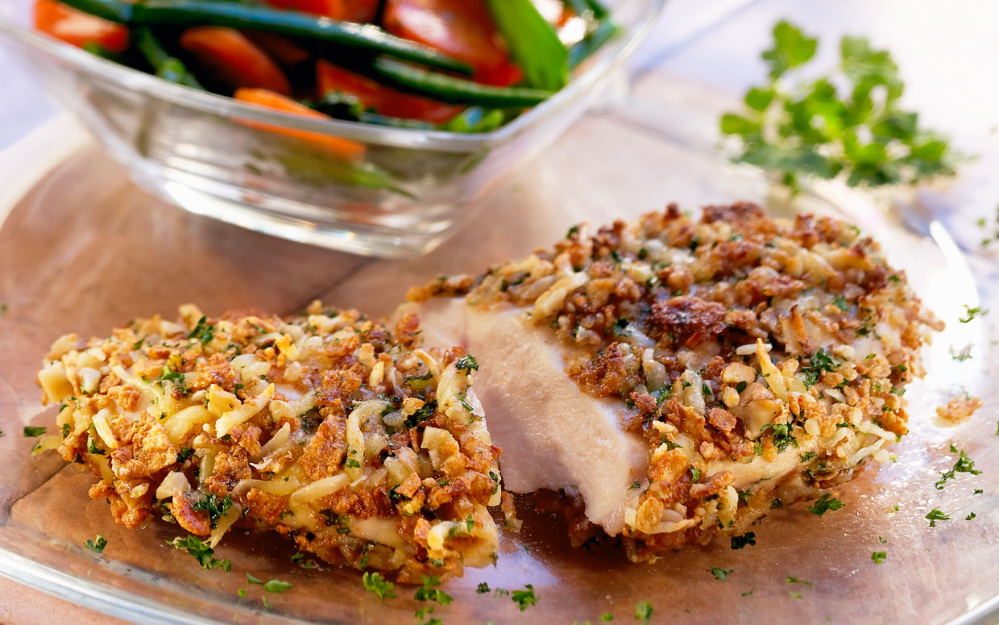

Crispy Rosemary Chicken

Description
Rosemary chicken thighs, an easy oven-baked chicken recipe to make for any weeknight dinner. These chicken thighs are perfectly seasoned and cooked in the oven for less than an hour of cooking time. They are aromatic and flavorful.
Ingredients
- 8 chicken thighs
- 6 small red potatoes, quartered
- ½ cup avocado or coconut oil, or as needed
- 1 tablespoon chopped fresh rosemary
- 1 ½ teaspoons chopped fresh oregano
- 1 ½ teaspoons garlic powder
- Pepper to taste
Directions
- Preheat the oven to 375 degrees F (190 degrees C).
- Place chicken and potatoes into a large bowl. Pour olive oil over them, and stir to coat. Scatter the chicken and potato pieces in a large baking dish, or cookie sheet with sides. Sprinkle with rosemary, oregano, garlic powder, salt and pepper.
- Bake for 1 hour in the preheated oven, uncovered. Baste during the last 15 minutes for extra crispness.
Back to Homepage